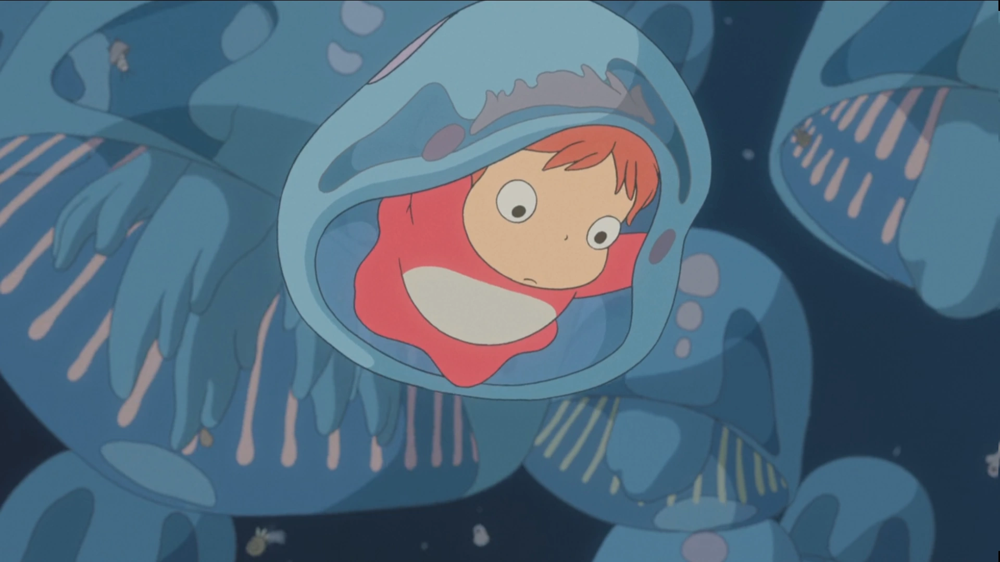
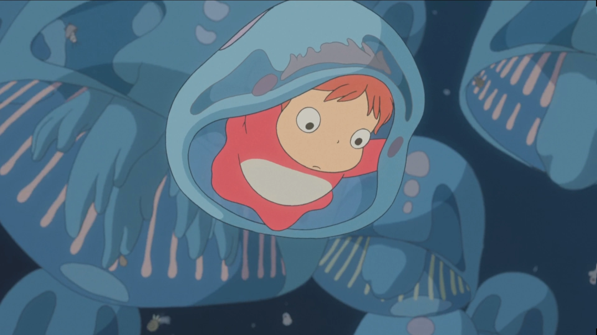

My Favorite Ghibli Movie
 

Ponyo: A Magical Journey of Love and Friendship
Ponyo, a 2008 Japanese animated fantasy film written and directed by Hayao Miyazaki, is a captivating tale of love, friendship, and the transformative power of nature. The film follows the story of Sosuke, a five-year-old boy who lives on a cliff overlooking the sea, and Ponyo, a goldfish princess who yearns to become human. Their paths intertwine when Ponyo escapes from her ocean kingdom and is swept ashore in a jar. Sosuke and Ponyo quickly form a deep bond, and Ponyo's desire to become human grows stronger with each passing day. As their friendship blossoms, Ponyo's magical powers begin to manifest, causing unexpected changes in the world around them. Meanwhile, Ponyo's father, Fujimoto, a powerful sorcerer, is determined to bring her back to the ocean. He unleashes a devastating storm that threatens to engulf Sosuke's village and the entire world. In the face of impending doom, Sosuke and Ponyo must make a difficult choice: to remain together as inseparable friends or to follow their separate destinies. Their decision will have a profound impact on not only their own lives but also on the balance of the world.
A Visual Feast for the Eyes
Ponyo is a visual masterpiece, filled with vibrant colors, stunning animation, and breathtaking imagery. Miyazaki's signature style is on full display, with every frame bursting with life and imagination. The film's underwater scenes are particularly mesmerizing, with Ponyo's magical powers creating a kaleidoscope of colors and shapes. The ocean itself is portrayed as a living, breathing entity, with its own unique beauty and power.
A Story of Love, Friendship, and Transformation
At its core, Ponyo is a story about the power of love and friendship. Sosuke and Ponyo's bond is unbreakable, and it is their love for each other that ultimately saves the world. The film also explores themes of transformation and change. Ponyo's journey from goldfish to human mirrors the natural cycle of life, and her desire to become human represents the transformative power of love.
A Timeless Classic
Ponyo is a timeless classic that will continue to enchant audiences of all ages for generations to come. It is a film that is full of wonder, imagination, and hope, and it is sure to touch the hearts of everyone who sees it. I highly recommend Ponyo to anyone looking for a heartwarming and unforgettable film experience.
Trading the Bustling City for the Serene Mountains: A Tagum Native's Journey to Malaybalay, Bukidnon
Hailing from Tagum City, a thriving metropolis in the Philippines, I never imagined myself venturing far from the familiar comforts of home. The city's vibrant energy, its diverse tapestry of cultures, and its endless opportunities had always held me captive. However, as I embarked on my academic journey, I found myself drawn to the tranquility and beauty of Malaybalay, Bukidnon, a city nestled amidst the enchanting Bukidnon highlands. My decision to study in Malaybalay was met with raised eyebrows and curious inquiries from family and friends. After all, Tagum City offered a plethora of reputable educational institutions, while Malaybalay was often perceived as a sleepy provincial town. Yet, I was undeterred, convinced that this change of scenery would provide a refreshing perspective and foster personal growth. Departing from the bustling streets of Tagum City, I was greeted by the serene embrace of Malaybalay's verdant landscapes. The city's laid-back atmosphere and friendly locals offered a welcome respite from the urban clamor. As I immersed myself in the city's rhythm, I discovered a hidden gem, a place where education transcended the confines of traditional classrooms.
The educational landscape of Malaybalay proved to be a fertile ground for intellectual exploration. The city's institutions, though smaller in scale, were no less rigorous in their pursuit of academic excellence. My professors, passionate and dedicated, fostered a stimulating learning environment, encouraging critical thinking and open dialogue. Beyond the classroom walls, Malaybalay unveiled its hidden treasures. The city's rich cultural heritage was evident in its vibrant festivals, its colorful handicrafts, and its delectable cuisine. I found myself captivated by the warmth and hospitality of the locals, who embraced me as one of their own. As I delved deeper into the heart of Malaybalay, I discovered a city teeming with natural wonders. Majestic waterfalls cascaded down verdant slopes, inviting refreshing dips amidst the lush greenery. Serene lakes mirrored the sky's ever-changing moods, offering moments of tranquility and reflection. Towering mountains beckoned with the promise of breathtaking vistas and invigorating hikes.
Living in Malaybalay was not without its challenges. The city's limited resources and slower pace of life were a stark contrast to the bustling energy of Tagum City. However, these challenges also presented opportunities for growth and resilience. I learned to adapt, to embrace simplicity, and to appreciate the slower rhythm of life. My journey to Malaybalay was a leap of faith, a decision to venture beyond the familiar comforts of home in pursuit of a unique educational experience. While the transition was not without its challenges, the rewards far outweighed the initial uncertainties. Malaybalay, with its serene beauty, rich culture, and warm embrace, became my second home, a place where I discovered not only academic excellence but also personal growth and self-discovery. So, to those contemplating a similar journey, I say embrace the unknown. Step out of your comfort zone and explore the world beyond your familiar surroundings. You might just discover hidden gems, like Malaybalay, Bukidnon, where education extends beyond the classroom and personal growth flourishes amidst the tranquil beauty of nature.
Seeking Solace in a New Place
The comforting embrace of my church has always been my sanctuary, a place where I found solace, guidance, and a sense of belonging. Surrounded by the familiar faces of my fellow parishioners, the uplifting melodies of the choir, and the profound wisdom of our pastor's sermons, I felt unwavering faith and a deep connection to my spiritual core. However, a recent move has left me feeling adrift, longing for the spiritual nourishment that my church once provided. Life in this new environment has been a whirlwind of unfamiliar sights, sounds, and customs, leaving me disoriented and out of place. I miss the familiar routines of my previous life, the comforting rhythm of weekly church services, and the camaraderie of my fellow believers.
Sure, here is a blog about a girl having a hard time being away from her church and her faith, without specifying locations: Seeking Solace in a New Place The comforting embrace of my church has always been my sanctuary, a place where I found solace, guidance, and a sense of belonging. Surrounded by the familiar faces of my fellow parishioners, the uplifting melodies of the choir, and the profound wisdom of our pastor's sermons, I felt unwavering faith and a deep connection to my spiritual core. However, a recent move has left me feeling adrift, longing for the spiritual nourishment that my church once provided. Life in this new environment has been a whirlwind of unfamiliar sights, sounds, and customs, leaving me disoriented and out of place. I miss the familiar routines of my previous life, the comforting rhythm of weekly church services, and the camaraderie of my fellow believers. As a born-again Christian, my faith has always been an anchor in my life. It has guided my decisions, shaped my values, and provided me with unwavering strength during difficult times. But now, without the familiar support of my church community, I feel like a ship without a rudder, lost at sea. I've tried to find solace in other ways, seeking out local churches and immersing myself in the new community. However, it hasn't been easy. The unfamiliar customs have made it difficult to feel truly connected, and I yearn for the deep sense of belonging I once had. Despite the challenges, I refuse to give up on my faith. I know that God is always with me, no matter where I am. I just need to find a way to reconnect with my faith in this new environment.
I've started by reading the Bible and praying regularly, even if it means doing so in solitude. I've also reached out to other Christians online, finding solace in their shared experiences and words of encouragement. I know that finding a new church home will take time, but I'm determined to persevere. My faith is too important to me to abandon. I know that God will guide me through this difficult time and help me find the spiritual nourishment I need. In the meantime, I'll continue to seek God's presence in every aspect of my life, even in this unfamiliar place. I know that He is always with me, and that His love will never fade.
My Outputs/Learnings every Lesson:
CHAPTER 1: WHAT IS COMPUTING?
In this lesson, it was discussed that the development of computers began with mechanical calculators in the early 1800s and evolved rapidly with the invention of the transistor in 1947. The first electronic computers, while large and cumbersome, demonstrated the potential of computing to solve complex problems. The advent of personal computers in the 1970s brought computing power to homes and workplaces, revolutionizing how people interact with technology.
In addition, the internet, a vast network of linked computers, has become an essential resource for business, education, and communication, enabling instant global communication, easy access to information, and the rise of social media platforms. Computers have also revolutionized businesses, enhancing productivity, streamlining processes, and enabling data-driven decision-making. They have transformed manufacturing, financial markets, and supply chain management, driving innovation and economic growth.
I've also realized that computers are now commonplace in our daily lives, changing the way we communicate, work, and interact with the world. From smartphones to supercomputers, these devices have become indispensable tools for modern society. Computers have had a profound impact on society, transforming communication, industries, and our perception of the world.
In this lesson, it made me feel more exciting because the course that I have right now has a lot of careers. As it was discussed, computers serve a purpose in many fields, including business, government, industry, research, and education. They are becoming an indispensable part of our daily lives. Computer-related jobs will continue to grow and diversify as computers become more commonplace. Some of these jobs include those of system analysts, software engineers, database administrators, system administrators, network engineers, computer scientists and researchers, internet applications programmers, and technical support representatives.
CHAPTER II: PROFESSIONS & CAREERS IN COMPUTING
In this lesson, it made me feel more exciting because the course that I have right now has a lot of careers. As it was discussed, computers serve a purpose in many fields, including business, government, industry, research, and education. They are becoming an indispensable part of our daily lives. Computer-related jobs will continue to grow and diversify as computers become more commonplace. Some of these jobs include those of system analysts, software engineers, database administrators, system administrators, network engineers, computer scientists and researchers, internet applications programmers, and technical support representatives.
CHAPTER III: INFORMATION PROCESSING CYCLE
This lesson taught me that data serves as the foundation for the digital world, while information arises from processed data, offering meaningful value for decision-making. The information processing cycle involves input, processing, storage, and output. Input and instructions are received, data gets processed into information, stored for later use, and then presented in usable formats. The Central Processing Unit acts as a computer's brain, managing data, executing programs, and facilitating input/output. Good information is relevant, timely, accurate, presentable, cost-effective, and complete.
CHAPTER IV: INTRODUCTION TO COMPUTER SYSTEMS
In this lesson, it talks about how a computer system functions as a network of interconnected components collaborating to process, store, and exhibit information. These components fall into four primary categories: hardware, encompassing physical elements such as the CPU, memory, input/output devices, and storage; software, comprising system software (like operating systems and drivers) and application software (for specific tasks); peopleware, which involves users like programmers, system administrators, and end users; and finally, dataware, the information stored, processed, and transmitted by computers. Each segment plays a vital role in the seamless operation of the system, from executing tasks to facilitating user interaction and handling data.
CHAPTER V: NUMBER SYSTEMS
I've learned that computers understand only numbers, so they convert all data, including text, images, and sound, into binary form, a series of 1s and 0s. This conversion is necessary for the computer to process the data. The decimal numbers use 10 digits, while binary numbers use only 2 digits: 0 and 1. Binary numbers are important because they are the language of computers. In number systems for a computer, there are a lot of conversions. These conversions are Binary to Decimal Conversion, Decimal to Binary Conversion, Octal Number System, Binary to Octal Conversion, Octal to Binary Conversion, Hexadecimal Number System, Hexadecimal to Binary Conversion, and Binary to Hexadecimal Conversion.
CHAPTER VI: BASIC CONCEPT OF COMPUTER SECURITY
In this lesson, I've learned that even while we enjoy the accessibility of technology in today's digital world, it's important to recognize its negative aspects. Our convenience and affluence frequently cause us to become unaware of the dangers and hazards that this digital age brings with it. A crucial defense against the unrelenting onslaught of cybercrime, where hackers and cyberattacks are commonplace, is cybersecurity. This digital world's cornerstone, personal data, contains sensitive information that is becoming more and more vulnerable. The spectrum of cybercrime is always growing, ranging from identity theft to hacking, piracy, cyberbullying, and malware attacks. To counter these dangers, cybersecurity methods, including firewalls, proxies, encryption, and cyber liability insurance, are used. In order to protect against potential cyber attacks, we must become more cautious and knowledgeable about the techniques and responses used by cybercriminals as they develop and spread.
MODULE IV: THE INTERNET & WORLD WIDE WEB
This lesson taught me that it's important to understand the Internet, and there are videos that might help. For services like email and the web, data is transmitted over many networks by the Internet, a worldwide system that uses protocols like IP. Data storage is streamlined through cloud computing, which also provides accessibility from any location without requiring local storage. Innovations in AI, such machine learning and neural networks, enable computers to learn from data and make predictions, simulating human thought processes. Innovation in cyberspace and across industries is fueled by these breakthroughs. In addition, the internet serves three primary purposes: communication, research, and publishing. Lastly, social media encompasses interactive platforms allowing users to share messages, images, videos, and diverse content within virtual communities. It includes various types such as social networking sites for personal connections, social review platforms providing community-based reviews, image-sharing platforms focusing on visuals, video hosting sites revolutionizing video sharing, community blogs for sharing thoughts, discussion platforms sparking conversations, and sharing economy networks connecting users for resource and opportunity sharing.
CHAPTER VII: PROTECTING YOURSELF AGAINST CYBER ATTACKS
In this lesson, I've learned that in the field of cybersecurity, vulnerabilities include existing weaknesses that attackers take advantage of, whereas threats are incidents that have the potential to harm systems or organizations. Threats generate a risk when they take advantage of weaknesses and cause a range of possible losses or damages. Spear and phishing attacks, network probing, brute-force cracking, drive-by downloads, denial-of-service assaults, and advanced persistent threat (APT) attacks are types of common cyberattacks. Viruses, worms, trojan horses, rootkits, backdoors, keyloggers, adware, spyware, rogue security software, ransomware, and browser hijackers are all considered malicious software (malware), and each is created with a specific goal in mind, such as stealing data, disrupting systems, or collecting money.
MODULE V: BASIC HTML & CSS
In this lesson, it helps me make our final major output. I've learned that Hyper Text Markup Language, or HTML, uses tags like HTML, HEAD, TITLE, and BODY to represent contents on web pages. Cascading Style Sheets, or CSS, are used by browsers to style components by altering their look, layout, and other aspects. CSS selectors provide targeted style by locating components by their name, id, or class. External style sheets (for whole websites), internal style sheets (for individual pages), and inline styles (for certain elements) are the three ways to apply CSS. Inline styles, external/internal style sheets, and browser defaults take precedence over other styles when they contradict each other.
A Lesson that Challenged Me the Most
As someone who had never coded before, I took on the task of learning HTML and CSS lesson for this final major output, our first ever personal profile webpage. At first, the complexity of CSS's styling and HTML's structure-building tags felt like attempting to understand a foreign language. I overcame mistakes and setbacks by using perseverance and internet resources to convert them into teaching moments. I developed a growth mindset and acquired technical skills by persevering and breaking difficult concepts into manageable steps.